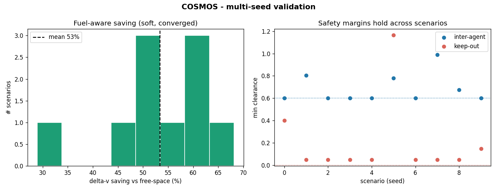
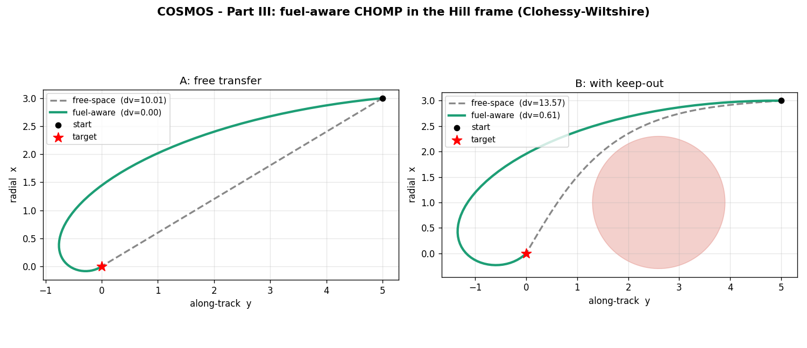
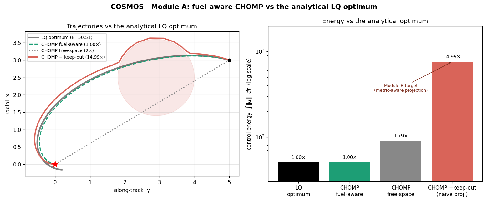
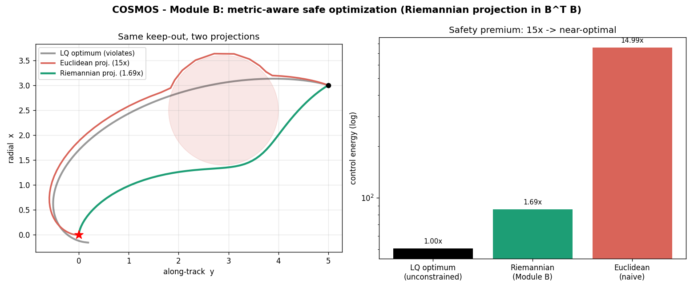
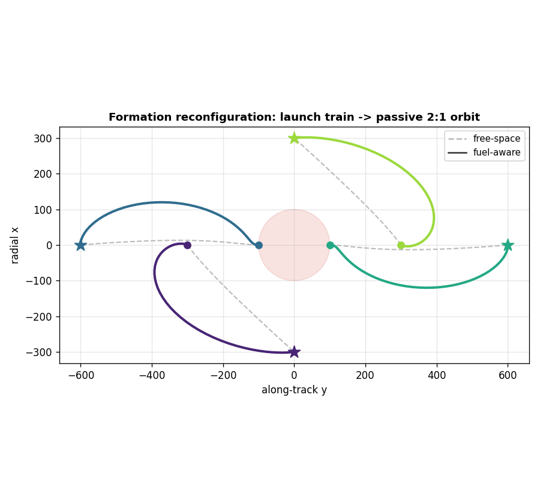
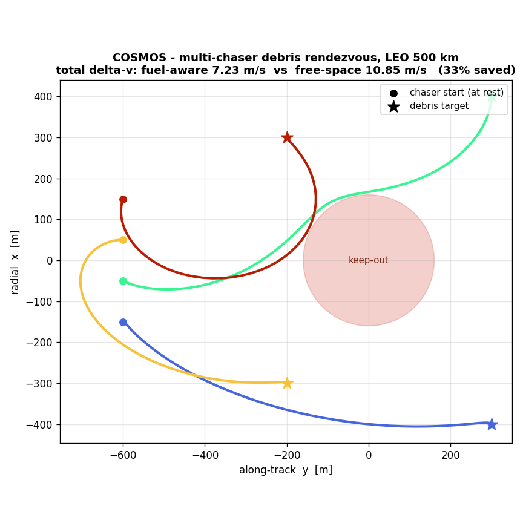
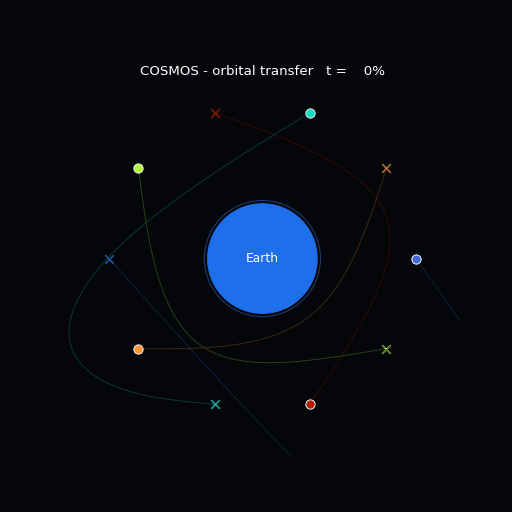

COSMOS
Make CHOMP's covariant gradient aware of orbital mechanics — so a generic path smoother becomes a fuel-optimal orbital maneuver planner.
Smoothing the wrong thing
Standard trajectory smoothing minimizes acceleration. But in orbit the dynamics already supply acceleration for free — so penalizing raw acceleration optimizes a quantity that has little to do with fuel.
A working prototype, already validated
Every claim below is reproduced by a script in the repository.

Three pieces, one research arc
Metric → optimality → safety-in-the-metric. Each piece reinforces the next.
Fuel-aware CW metric
Replace \(A^{\top}A\) with \(B^{\top}B\) so the covariant gradient minimizes true thrust energy. The planner spontaneously discovers natural coast arcs.

Provable optimality
A closed-form LQ / Gramian optimum as ground truth. Fuel-aware CHOMP hits 1.00×; a naive Euclidean keep-out projection balloons to 15×.

Metric-aware safety
Project keep-outs in the fuel metric, not Euclidean space. A closed-form Riemannian projection cuts the premium 15× → 1.69×, still collision-free.

One command, built on layers
The science is staged into self-contained modules; a single driver composes them into the mission.
cosmos command)Install & run in a minute
A standard Python package — install it, then call the cosmos command.
# clone & install (editable) git clone https://github.com/stanislaw-sommerfeld/COSMOS.git cd COSMOS python -m venv venv && source venv/bin/activate pip install -e . # add ".[viz]" for the pygame viewer
# run the whole framework at once (figures + results + tests) python run_all.py # ...or the unified driver — configured by flags cosmos --units si # the mission, real units cosmos --metric free --safety none --assign fixed # dynamics-blind baseline cosmos --scenario debris --dim 3 --units si # 3D debris rendezvous # reproduce the headline figures python -m cosmos.chomp_cw # the contribution python -m cosmos.cosmos_optimal # 1.00× LQ optimum + the 15× pitfall python -m cosmos.cosmos_safe # 15× → 1.69× safety fix
The mission, visualized


